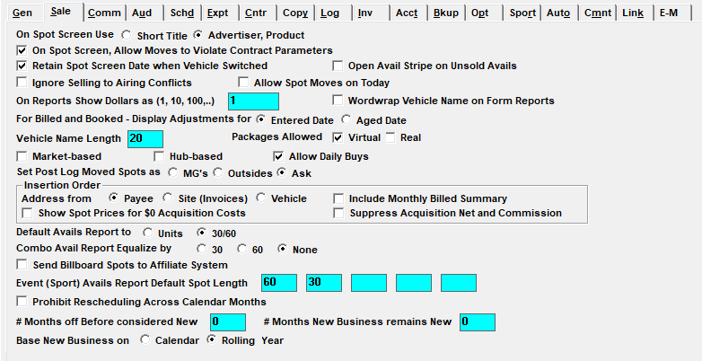

Sales

On Spot Screen Use Short Title or Advertiser/Product: This affects how titles will appear on the Spots screen and on various reports. The default is Advertiser, Product. The Short Title is a 15-character name defined on the order.
On Spot Screen, Allow Moves to Violate Contract Parameters: If checked, this question will allow users to move spots outside of contract parameters. Even if checked, you will still receive warnings about any spot move violations.
Retain Spot Screen Date When Vehicle Switched: If checked, this will allow you to stay in the selected week when switching vehicles in the Spots Screen.
Open Avail Stripe on Unsold Avails: If checked, a green stripe will appear in open and unsold avails in the Spot Screen using the following rules:
- If the percentage of breaks with open avails is less than 50%, the green stripe will not show.
- If the percentage of breaks with open avails is between 50% and 84%, a narrow green stripe will appear in any break with open avails.
- If the percentage of breaks with open avails is between 85% and 99%, a thick green stripe will appear in any break with open avails.
- If there are no open avails, the indicator will not show.
Ignore Selling to Airing Conflicts: The system checks Selling to Airing links for any potential advertiser conflicts on Airing Vehicles, and highlights potential conflicts in blue in the Spot Screen. If checked on this question will disable the conflict check feature.
Allow Spot Moves on Today: If checked, Traffic will be allowed to move spots on today’s date.
On Reports Show Dollars as (1, 10, 100,…): This is used for the Sales Reports when the revenue figures are extremely large. For example, defining dollars as 1000 would show 45,000 as 45, 10 would show 45,000 as 4500, and 1 would show 45,000
Wordwrap Vehicle Name on Form Reports: Vehicles with a name greater than 20 characters to wrap around to the next line, rather than being cut off after 20 characters
For Billed and Booked – Display Adjustments for Entered Date or Aged Date: On the Billed and Booked, adjustments can reflect the credit/debit figure for the month based on the date the adjustment was entered or the aged date, which is normally the date the original invoice was produced. For example: If you produced an invoice for $5,000 in February and learned you were to credit $1,000 in July, you could see the -$1,000 reflected in July (entered date) or February (aged date).
Print Contracts/Proposals Less Than 13 Weeks by Standard Quarters: The Proposal/Order prints 13 weeks per page. If this option is selected, the first 13 weeks are based on the standard broadcast quarter, not the first week the buy is active. (On version 7.1 and above, this setting has been moved to the Contract tab.)
Vehicle Name Length: The default vehicle length is 20 characters. This limit can be increased up to 40.
Packages Allowed: If using packages, you can choose to use Virtual and/or Real packages.
- Virtual Package : Package spot counts are independent of the total spot count that makes up the package. Virtual spots and times will appear on the invoice.
- Real Packages: Package spot count equals the number of spots that make up the package. The actual hidden vehicles and true air times/dates will appear on the invoice.
Market Based: If checked, and Markets are defined for each vehicle, when entering the Proposal, Order, Spot, and Log Screens you can select only those vehicles that are within certain markets. If Rep vehicles exist and Market is used, the Market can show total spots on the invoice.
Hub Based: Hub-based means vehicles are configured to be part of a specific hub (or group), so that salespeople that are defined as being part of that hub can only view or use the vehicles that are also part of that same hub.
Allow Daily Buys: This allows a specific number of spots to be ordered and scheduled on specific days, rather than distributed evenly across a week.
Set Post Log Moved Spots as MGs, Outsides, or Ask: This question determines how spots that are moved outside of contracted parameters in post log will be recorded.
- Makegoods: Spots will always be flagged as a MG on the invoice. The invoice will list where the spot was originally scheduled and lists where it actually aired.
- Outsides: Actual aired times will be stated on the invoice, but attention to the spot being made good will not be highlighted.
- Ask: This allows the user to decide whether a spot should be moved as a Makegood or an Outside, on a spot by spot basis.
Insertion Address From Payee, Site (Invoices) or Vehicle: This question determines which address will appear on the insertion order.
- Payee: This will print the Agency’s address on the insertion order.
- Site (Invoices): This will print the Network’s address as defined in Site Options->Invoices.
- Vehicle: This will print the vehicle’s address as defined in the Vehicles->General Screen.
Include Monthly Billed Summary: This determines whether the monthly and quarterly billing summary appears on the Insertion Orders report or not.
If "Include Monthly Billed Summary" is checked on, and the Insertion Orders report is run with the "rates" option selected, then the monthly and quarterly billing summary will be shown on the report after the vehicle gross/commission/net totals.
If "Include Monthly Billed Summary" is not checked on, then the monthly and quarterly billing summary will not be shown on the report.
Show Spot Prices on Insertion Orders for $0 Acquisition Costs: If checked, the insertion order will display the air time spot cost or NTR item rate if acquisition cost is $0.
Suppress Insertion Order Acquisition Net and Commission: When checked on, the Insertion Orders report with rates and without research will suppress the Commission and Net totals from the report.
Default Avails Report to Units or 30/60: This determines how avails will be reported.
- Units: Counts every avail as one unit based on :30s.
- 30/60: Counts units and seconds and will show the amount of :30 and :60 spots.
Combo Avail Report Equalize by 30, 60 or None: This setting affects the Avails Combo report. When Equalize by 30 or 60 is used, there are four spot lengths that can be highlighted on the report selection screen, and after the Other column, which shows spot counts for spots that do not match any of the four highlighted spot lengths, the next column will show equalized spot counts by either 30 or 60, depending on which option is selected in Site Options, in the E30 or E60 column. The equalize value is obtained by adding all the sold spots for the highlighted spot lengths, then dividing it by 30 or 60. For example, if there are four 30 second spots sold, and Equalize by 60 is selected in Site Options, the E60 column will show 2, as four 30 second spots are equalized to two 60 second spots when using the formula. The avail section works in a similar way, with equalized avails being calculated based on the total inventory minus what has been sold. When None is selected, there are five spot lengths that can be highlighted, and the final column will be “Other”, which is a count of the spots that do match any of the five highlighted spot lengths.
Send Billboard Spots to the Affiliate System: Not implemented .
Game Avails Report Default Spot Length: The Event and Sports Avails report highlights up to five spot lengths. You can enter default lengths here, or when you run the report.
Number Months Off Before Considered New, Number Months New Business Remains New, Base New Business on Calendar or Rolling Year: These three questions are used in calculating figures on the Sales Placement report.